1. Vue d'ensemble (layout desktop)
Sidebar + parcours + quêtes du jour + ligue — vision globale PC.
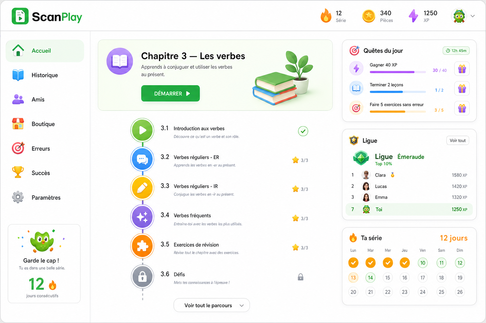
2. Maquettes par page
Une proposition visuelle pour chaque écran principal de l'app.
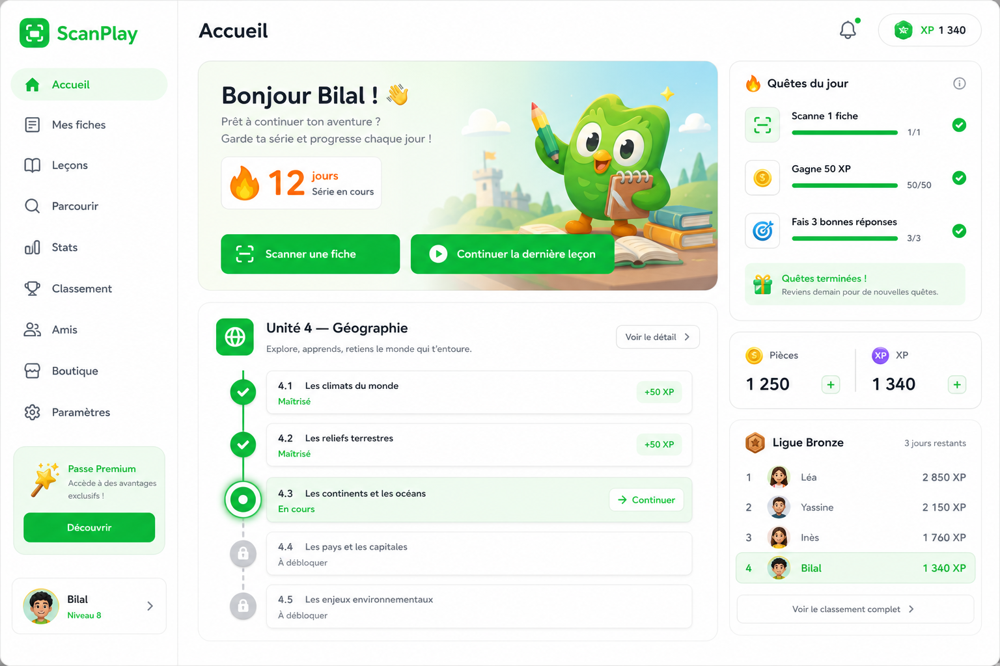
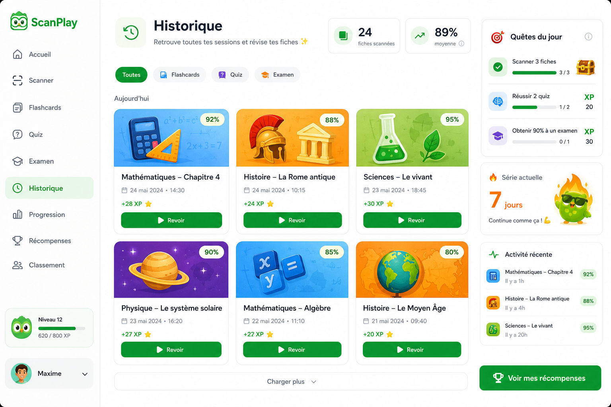
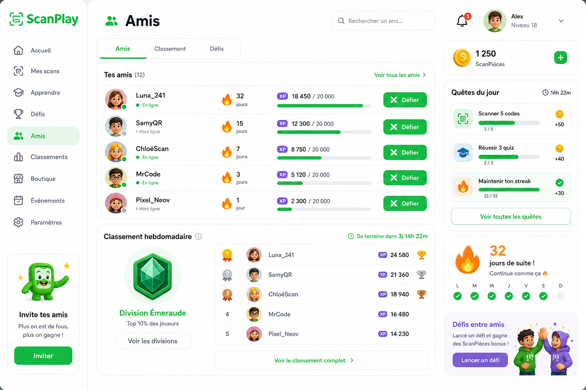
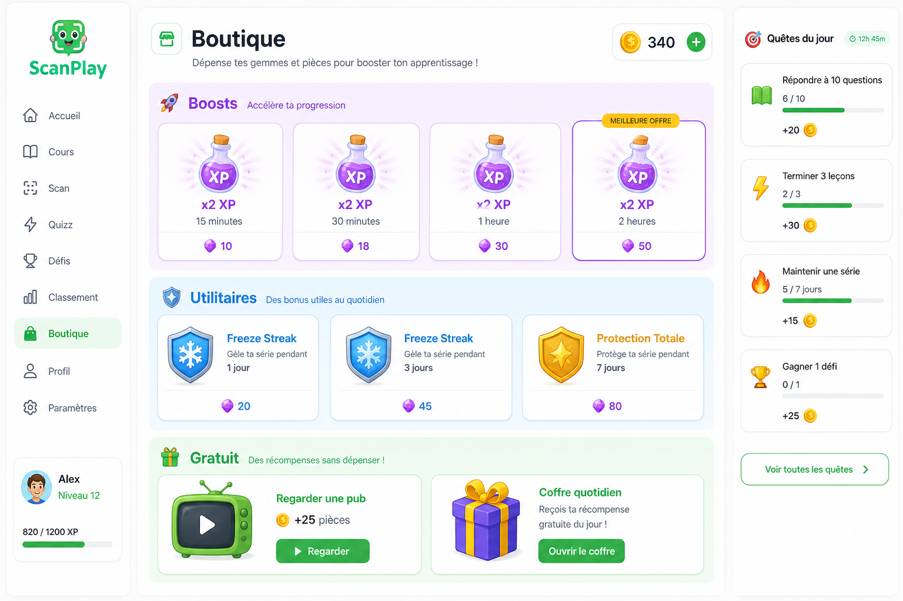
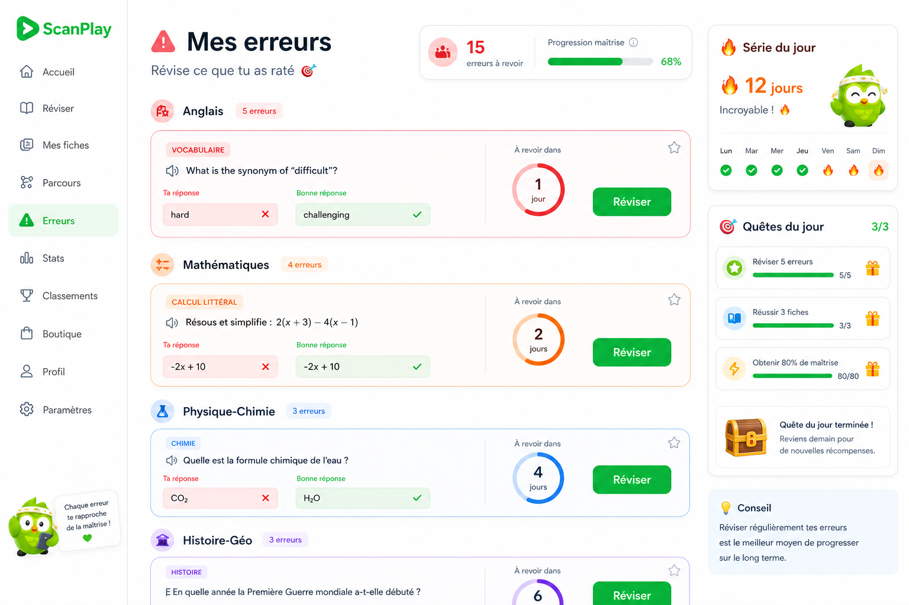
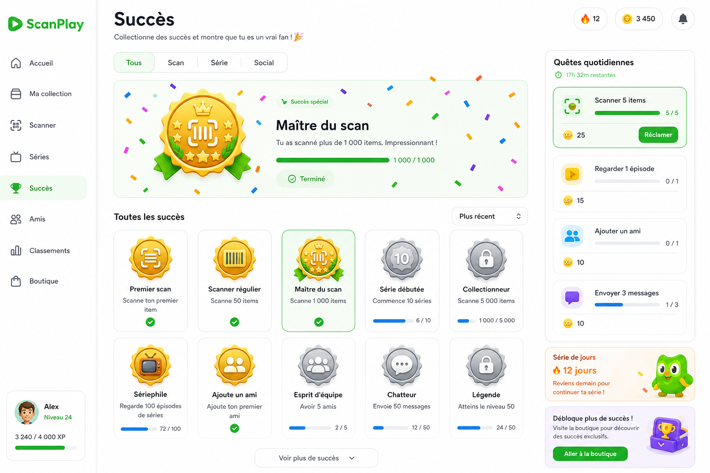
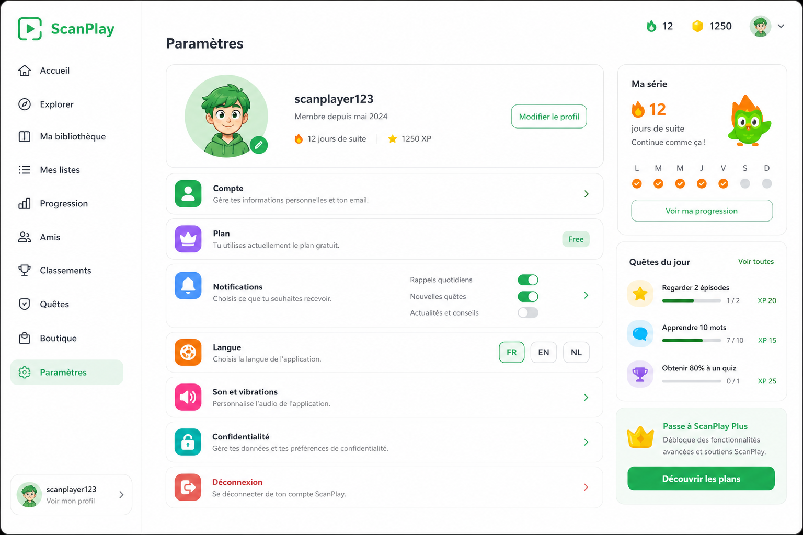
3. Mascotte Pix
Personnage original ScanPlay — fiche vivante, compagnon marketing.
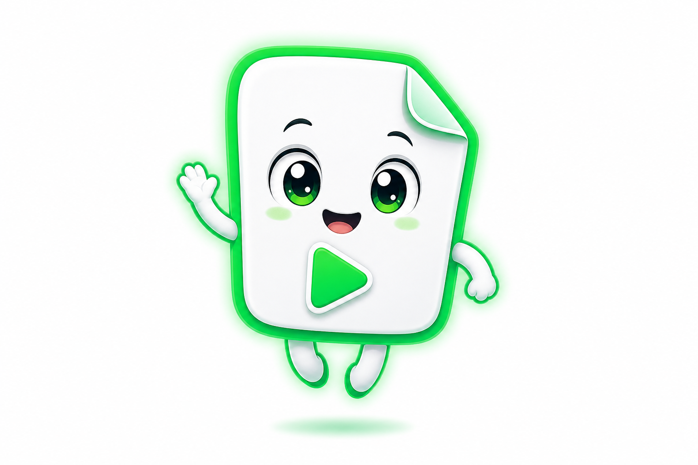
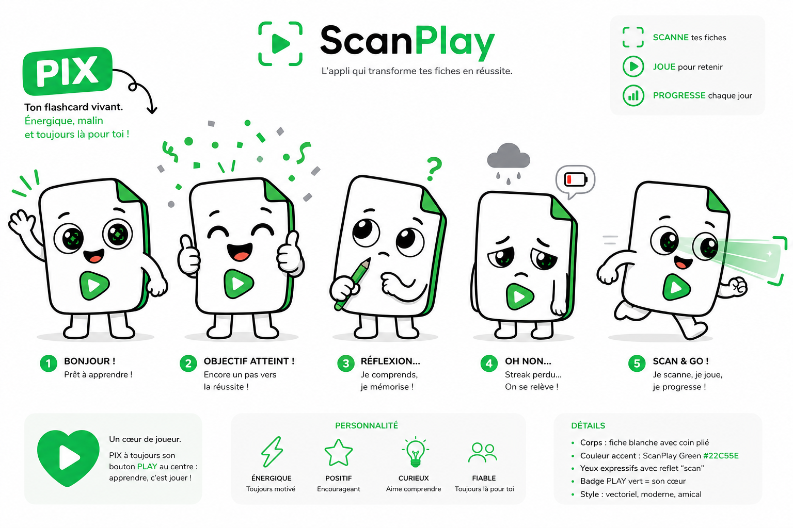
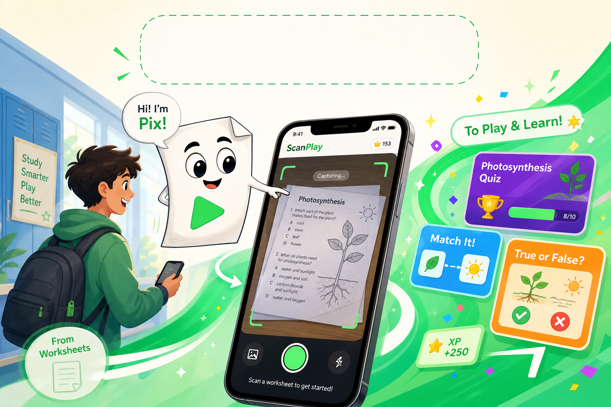